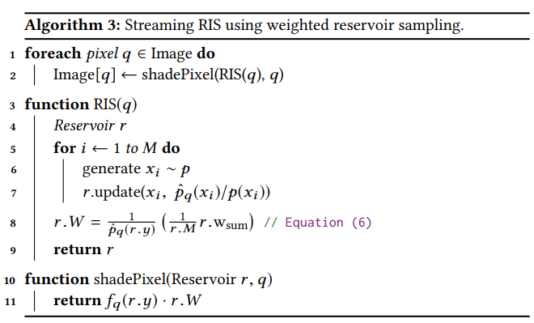
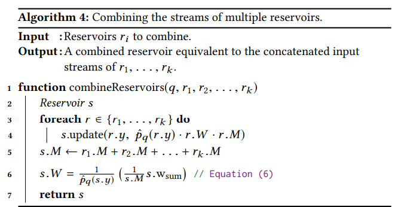
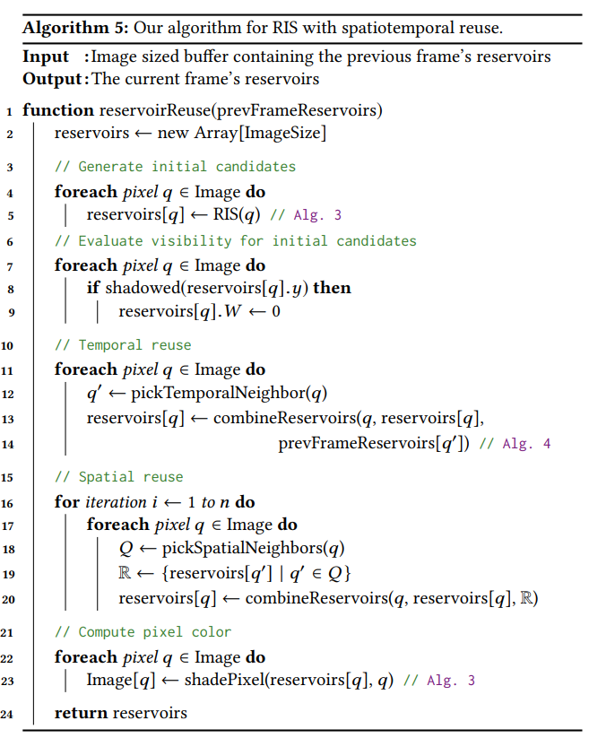

ReSTIR
RIS(Resampled Importance Sampling)
工作流程
-
从一个易于采样的分布 $ p\ (e.g.\ p\propto L_e) $中生成M个candidate samples $\mathbf{x} = {x_1,…,x_M }$
-
用离散概率分布$p(z|\mathbf{x})$从candidate samples中随机选择索引$z \in {1,…,M }$
$$ p(z|\mathbf{x}) = \frac{\mathrm{w}(x_z)}{\sum_{i=1}^{M}\mathrm{w}(x_i)}\ \ with\ \ \mathrm{w}(x) = \frac{\hat{p}(x)}{p(x)} $$
$\hat{p}(x)\ (e.g.\ \ \hat{p} \propto L_e \cdot f_r \cdot cosine)$是目标分布(target pdf)。
-
挑选出一个样本 $y= x_z$ ,用于单样本的蒙特卡洛估计。
$$ I_{ris}^{1,M} = \frac{f(y)}{\hat{p}(y)}\cdot(\frac{1}{M}\sum_{j=1}^{M}\mathrm{w}(x_j)) $$
-
重复采样，采样出多个$y$ ，用于N样本的蒙特卡洛估计。
$$ I_{ris}^{N,M} = \frac{1}{N}\sum_{i=1}^{N} \Bigl( \frac{f(y_i)}{\hat{p}(y_i)}\cdot \bigl(\frac{1}{M}\sum_{j=1}^{M}\mathrm{w}(x_{ij})\bigl)\Bigl) $$
注意事项
- $M,N \geqslant 1$
- 当$f(x)$非0时，$p,\hat{p}$也非0
MIS和RIS
-
从多个分布$p_i$中，生成M个candidate samples $\mathbf{x} = {x_1,…,x_M }$
-
使用重要性权重
$$ \mathrm{w}i(x) = \omega{i,mis}(x)\cdot \frac{\hat{p}(x)}{p_i(x)} $$
$$ W = \sum_{i=1}^{M}\mathrm{w}_i(x_i) $$
-
蒙特卡洛估计
$$ I^1 = \frac{f(y)}{\hat{p}(y)} \cdot W \ I^N = \frac{1}{N}\sum_{i=1}^{N}(\frac{f(y_i)}{\hat{p}(y_i)}W) $$
WRS(Weighted Reservoir Sampling)
WRS是在一次遍历中从$\mathbf{x} = {x_1,…,x_M }$ 中采样出N个元素的一类方法。每个元素$x_i$被选取的概率为：
$$ P_i = \frac{\mathrm{w}(x_i)}{\sum_{j=1}^{M}\mathrm{w}(x_j)} $$
伪代码：
|
|
结合WRS和RIS
|
|
其中：
$$ r.W = \frac{1}{\hat{p}(r.y)}(\frac{1}{M}\sum_{i = 1}^{M}\mathrm{w}_i(x_i)) $$

样本时空复用
空域复用
需要用到两个pass，第一个pass记录当前像素的reservoir，第二个pass复用邻近像素的reservoir。
第一步： 在每个像素上使用RIS(q)生成M个candidate samples，然后在一个图像大小的的缓冲中存错每个像素的reservoir的结果。
第二步： 每个像素挑选出k个相邻像素，并将这些像素上的reservoir与自身reservoir结合。
这样，在每个像素上的开销位O(k+M),但是每个像素使用的candidate samples有k*M个。迭代多次这个过程，开销位O(nk+M), 每个像素使用的candidate samples$k^nM$个。

时域复用
重用上一帧的reservoir。

多分布RIS中的Bias
首先把蒙特卡洛估计器改写为：
$$ L_{ris}^{1,M} = f(y)\cdot \Bigl( \frac{1}{\hat{p}(y)} \cdot \frac{1}{M} \cdot \sum_{j = 1}^{M} \mathrm{w}(x_j) \Bigr) = f(y)\cdot W(\mathbf{x},z) $$
$$ W(\mathbf{x},z) = \frac{1}{\hat{p}(x_z)} \cdot \Bigl(\frac{1}{M} \cdot \sum_{i = 1}^{M}\mathrm{w}_i(x_i) \Bigr) $$
在这个估计器中，用$W$去替代了1/$p(y)$。
在多分布的RIS中，由于candidate samples $\mathbf{x}$中的样本$x_i$可以来源于不同的采样$p_i(x_i)$，有：
$$ p(\mathbf{x}) = \prod_{i = 1}^{M}p_i(x_i) $$
在前面已经提到，从candidate samples中选择样本的策略：
$$ p(z|\mathbf{x}) = \frac{\mathrm{w}z(x_z)}{\sum{i=1}^{M}\mathrm{w}_i(x_i)}\ \ with\ \ \mathrm{w}_i(x_i) = \frac{\hat{p}(x_i)}{p_i(x_i)} $$
因此，
$$ p(\mathbf{x},z) = p(z|\mathbf{x})\cdot p(\mathbf{x}) = (\prod_{i = 1}^{M}p_i(x_i)) \frac{\mathrm{w}z(x_z)}{\sum{i=1}^{M}\mathrm{w}_i(x_i)}\ \ with\ \ \mathrm{w}_i(x_i) = \frac{\hat{p}(x_i)}{p_i(x_i)} $$
记集合：
$$ Z(y) = {i|1 \leqslant i \leqslant M\ \wedge \ p_i(y) > 0 } $$
则$p(y)$可以写作：
$$ p(y) = \sum_{i \in Z(y)} \underbrace{\int …\int}{M-1 \ times}p(\mathbf{x}^{i \to y},i)\underbrace{dx_1…dx_M}{M-1 \ times} $$
其中 $\mathbf{x}^{i \to y} = {x_1,…,x_{i-1}, y, x_{i+1},…x_M }$。
条件期望：
$$ E_{x_z = y}(W(\mathbf{x},z))= \sum_{i \in Z(y)} \frac{ \int …\int W(\mathbf{x}^{i \to y},i)p(\mathbf{x}^{i \to y},i)dx_1…dx_M}{p(y)} $$
最终可计算出:
$$ E_{x_z = y}(W(\mathbf{x},z))= \frac{1}{p(y)} \cdot (\frac{|Z(y)|}{M}) $$
所以，在目标pdf非0处，任何candidate pdf也非0时，则$|Z(y)| = M$,此时RIS就是无偏的，反之则$|Z(y)| < M$。导致$E_{x_z = y}(W(\mathbf{x},z)) < \frac{1}{p(y)}$ ，，图像会偏暗。
无偏RIS
为了达到无偏的RIS，可以对权重因子进行修改，不再使用$\frac{1}{M}$作为权重因子，而是取一个权重$m(x_z)$
$$ W(\mathbf{x},z) = \frac{1}{\hat{p}(x_z)} \cdot \Bigl(m(x_z)\cdot \sum_{i = 1}^{M}\mathrm{w}_i(x_i) \Bigr) $$
则计算条件期望：
$$ E_{x_z = y}(W(\mathbf{x},z))= \frac{1}{p(y)} \cdot (\sum_{i \in Z(y)}m(x_i)) $$
因此只要$\sum_{i \in Z(y)}m(x_i) =1$，就可以得到一个无偏的结果。
显然，当$m(x_z) = \frac{1}{|Z(x_z)|}$时，满足条件。
这里也可以结合MIS：
$$ m(x_z) = \frac{p_z(x_z)}{\sum_{i = 0}^{M}p_i(x_z)} $$